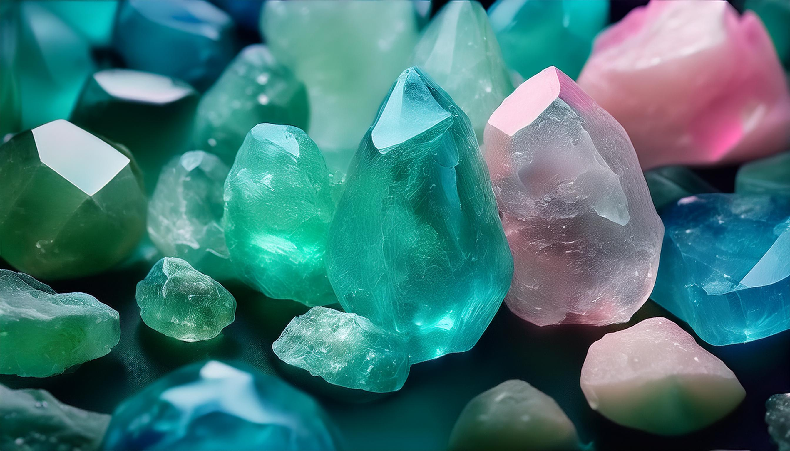

¿Qué es el Cuarzo Sintético?
El cuarzo sintético se crea en laboratorios mediante un proceso llamado "crecimiento hidrotermal". Este método imita las condiciones geológicas naturales bajo las cuales se forma el cuarzo en la Tierra. Los cristales crecen en autoclaves, grandes recipientes que simulan las altas presiones y temperaturas que se encuentran en las profundidades del planeta.

Proceso de Creación del Cuarzo Sintético
El cuarzo sintético se produce de manera controlada para satisfacer la demanda tanto de la industria como de la joyería. Este proceso implica varias etapas:
1. Material de Semilla
Se introduce un pequeño fragmento de cuarzo natural en el autoclave como base para el crecimiento del cristal.
2. Solución de Sílice
Se añade una solución de sílice y agua alcalina al autoclave. Bajo altas temperaturas y presión, el sílice se disuelve y comienza a cristalizarse alrededor de la semilla.
3. Crecimiento
El proceso puede durar semanas o incluso meses, dependiendo del tamaño y la pureza del cuarzo que se desea producir. Se controla cuidadosamente para garantizar la calidad y uniformidad del cristal resultante.
Diferencias entre Cuarzo Sintético y Natural
Existen varias diferencias clave entre el cuarzo sintético y el natural:
- Pureza: El cuarzo sintético es más puro y libre de imperfecciones visibles como burbujas de aire o inclusiones que suelen encontrarse en el cuarzo natural.
- Control de Color: A diferencia del cuarzo natural, el cuarzo sintético puede fabricarse en una amplia gama de colores a pedido, lo que lo hace popular en la industria de la joyería.
- Costo: Los cuarzos sintéticos suelen ser más económicos que los naturales, ya que su producción es más eficiente y predecible.
- Disponibilidad: A diferencia del cuarzo natural, que puede ser difícil de encontrar en grandes cantidades y con las características deseadas, el cuarzo sintético se puede producir en grandes volúmenes y tamaños específicos.
Aplicaciones del Cuarzo Sintético
El cuarzo sintético tiene diversas aplicaciones en diferentes industrias:
1. Industria Electrónica
El cuarzo sintético se utiliza extensamente en la industria tecnológica. Por su estabilidad y precisión, se emplea en componentes electrónicos como osciladores de cristal en relojes, radios, y sistemas de telecomunicaciones.
2. Joyería
Aunque el cuarzo natural sigue siendo altamente valorado, el cuarzo sintético es una opción asequible y estéticamente similar para quienes buscan colores específicos o joyas de alta calidad a un precio reducido.
3. Instrumentos Ópticos
Debido a su claridad y pureza, el cuarzo sintético es utilizado en lentes ópticos y otros dispositivos que requieren propiedades ópticas específicas.
4. Relojería
Los relojes de cuarzo, que dependen de la oscilación precisa del cristal de cuarzo, a menudo usan cuarzos sintéticos debido a su consistencia y fiabilidad.
Ventajas del Cuarzo Sintético
El cuarzo sintético tiene varias ventajas que lo hacen una opción atractiva:
- Control y Personalización: Los laboratorios pueden controlar tanto la calidad como el color del cuarzo sintético, lo que lo hace más predecible para usos industriales y decorativos.
- Sostenibilidad: La producción de cuarzo sintético puede ser vista como una opción más ecológica, ya que reduce la necesidad de extraer grandes cantidades de cuarzo natural del suelo.
- Accesibilidad: Su producción a gran escala lo hace más asequible y accesible para joyeros y diseñadores que desean trabajar con cuarzo sin las limitaciones de tamaño, pureza o color que pueden presentar las versiones naturales.
¿Cuarzo Natural o Sintético?
Ambos tipos de cuarzo tienen sus ventajas, dependiendo de su propósito. El cuarzo natural es ideal para quienes valoran la conexión con la tierra y las propiedades espirituales de los minerales. El cuarzo sintético, por otro lado, es una excelente opción para aplicaciones tecnológicas, ópticas y joyería moderna, donde la pureza y la personalización son cruciales.